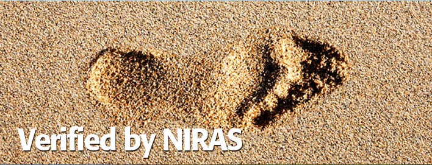

        <div data-role="view" id="niras-tabstrip" data-title="About Niras" style="background-color: #f3f3f3;">
           
            <div data-role="content" align="center" text-align="center">
                <ul data-role="listview" data-inset="true" data-theme="b">
                    <li>
                        <div>
                            
                        </div>
                        <label for="verified" data-localize="verified">
                            Verified by
                        </label>
                            
                        <div>
                            
                        </div>
                        <label for="niras1" data-localize="niras1">
                            NIRAS is an international consulting company with activities in areas such as construction,
                            infrastructure, utilities, environment and nature, climate and energy, and planning
                            and development. Our 1300 specialists solves customer challenges based on our values
                            - we listen, we learn, we deliver.<br>
                            <br>
                            NIRAS map the population's total climate impact seen from a consumer perspective.
                            This means the individual Dane carbon footprint (carbon footprint) as a result of
                            their consumption of goods and services in society.<br>
                            <br>
                            These analyzes are used among other things in the local climate plans in order to
                            take action to reduce people's impact on the climate in general.<br>
                            <br>
                            http://www.niras.com/
                        </label>
                            
                    </li>
                </ul>
            </div> 
        </div>
 